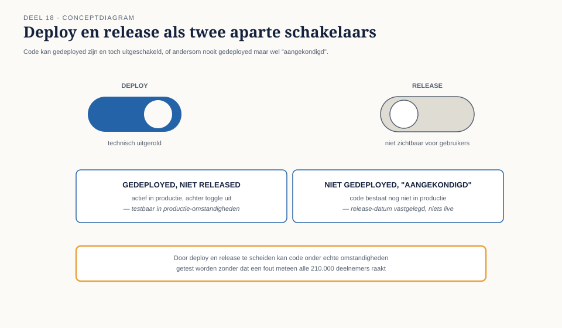
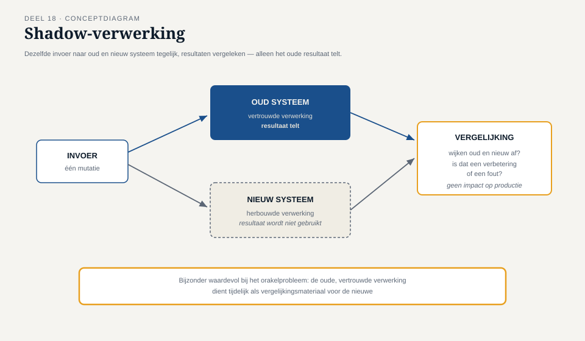

Deel 18 — Testautomatisering II: in de pijplijn
Reader · Ductus-cursus Testen en Kwaliteitsborging · niveau 2 (professional) · deel 18 van 30
Leerdoelen
Na dit deel kun je:
- testautomatisering integreren in een CI/CD-pijplijn met bewuste testselectie per fase;
- het onderscheid tussen deploy en release toepassen als ontwerpprincipe voor risicobeheersing;
- feature toggles inzetten en de testimplicaties ervan beoordelen;
- testen in productie (canary, shadow) toepassen als aanvulling op, niet vervanging van, vooraf testen;
- de pijplijn zelf als kwaliteitspoort beoordelen en verdedigen tegen druk om haar te omzeilen.
Studielast: één dagdeel klassikaal, circa drie uur zelfstudie.
1. Groen licht, veertig minuten later rood
De geautomatiseerde pijplijn van het portaalteam gaf op een vrijdagmiddag groen licht: alle 340 geautomatiseerde tests geslaagd, klaar voor deploy. Veertig minuten na de deploy meldde het kernintegratieteam een falende ketentest — niet omdat het portaalteam iets fout had gedaan, maar omdat de pijplijn van het portaalteam de ketentest (deel 16) niet had meegenomen: die liep apart, handmatig gepland, eens per twee weken.
Groen licht van een pijplijn zegt alleen iets over wat er in die pijplijn zit. Dit is T8 (niveau 1) in een nieuwe gedaante: een groen scherm dat een besluit lijkt te ondersteunen, zonder dat iemand had vastgesteld wélke risico's het daadwerkelijk afdekte.
Kernzin — Een groene pijplijn is een uitspraak over de tests die erin zitten, niet over de kwaliteit van het systeem. Verwar die twee, en de pijplijn wordt het nieuwe exitcriterium-dat-een-percentage-is.
2. Testselectie per fase in de pijplijn
2.1 Niet alles bij elke commit
Een pijplijn die bij elke wijziging alle 340 tests plus de volledige ketentest draait, wordt binnen de kortste keren te traag om bruikbaar te zijn. De oplossing is gefaseerde testselectie, gekoppeld aan de teststrategiematrix (deel 12):
| Fase | Wanneer | Wat draait | Doel |
|---|---|---|---|
| Commit-fase | bij elke wijziging | snelle componenttests, statische analyse (niveau 1, deel 4) | direct feedback aan de ontwikkelaar |
| Integratiefase | bij samenvoeging naar de hoofdlijn | integratie- en contracttests (deel 16) | vroeg conflicten tussen teams vangen |
| Ketenfase | vóór een release | volledige ketentest, inclusief Vestara | het risico dat T7 herhaalt, expliciet afgedekt |
| Productiefase | na deploy | monitoring, canary-analyse (§4) | risico's die alleen onder echte belasting zichtbaar worden |

2.2 Waarom dit geen compromis op kwaliteit is
Gefaseerde selectie is geen versoepeling maar een toepassing van precies dezelfde risicologica als deel 12: niet alles hoeft even vaak en even diep, mits de keuze bewust en gedocumenteerd is. Het probleem bij het portaalteam was niet dat de ketentest apart liep — dat kan een verantwoorde keuze zijn — maar dat niemand dat wist toen het groene licht werd gelezen als "alles is getest".
3. Deploy versus release
3.1 Het onderscheid
Deploy is het technisch uitrollen van nieuwe code naar een omgeving, inclusief productie. Release is het besluit om die code daadwerkelijk zichtbaar of actief te maken voor (een deel van) de gebruikers. Het scheiden van deze twee is een van de krachtigste risicobeheersingsprincipes in moderne delivery.
3.2 Waarom het scheiden risico verkleint
Wanneer deploy en release gelijktijdig gebeuren, is elke wijziging onmiddellijk voor alle gebruikers zichtbaar — een fout heeft direct volledige impact. Door ze te scheiden (met feature toggles, §3.3) kan code al in productie draaien, getest worden onder echte omstandigheden op beperkte schaal, zonder dat een fout meteen alle 210.000 deelnemers raakt.

3.3 Feature toggles
Een feature toggle is een schakelaar in de code die bepaalt of nieuwe functionaliteit actief is, onafhankelijk van deploy. Voor testen heeft dit twee gevolgen:
- Kans: nieuwe functionaliteit kan getest worden in productie-achtige omstandigheden vóór volledige release (§4).
- Risico: het aantal mogelijke toestandscombinaties groeit — een systeem met vijf toggles heeft potentieel 2⁵ combinaties van aan/uit, en de meeste teams testen slechts een klein deel daarvan. Dit is de terugkeer van de combinatorische explosie uit deel 13 (pairwise), nu toegepast op toggle-combinaties in plaats van functionele condities.
Kernzin — Elke toggle die je toevoegt, voegt een testdimensie toe die niemand vraagt te testen totdat twee toggles tegelijk een onverwachte combinatie blootleggen.
4. Testen in productie
4.1 Waarom dit geen vervanging is van vooraf testen
Niveau 1, deel 3 introduceerde shift-right als aanvulling, met de waarschuwing dat het geen excuus is om vooraf minder te testen bij hoog risico. Dit deel werkt dat uit met twee concrete technieken.
4.2 Canary-releases
Een canary-release rolt nieuwe functionaliteit eerst uit naar een klein, gecontroleerd deel van de gebruikers (bijvoorbeeld 2% van de werkgevers), met intensieve monitoring, vóórdat de volledige uitrol volgt. Een probleem raakt zo een beperkte groep in plaats van iedereen, en wordt — mits de monitoring goed is ingericht — snel opgemerkt.
4.3 Shadow-verwerking
Bij shadow-verwerking draait nieuwe functionaliteit parallel aan de bestaande, met dezelfde invoer, maar zonder dat het resultaat daadwerkelijk wordt gebruikt. De uitkomsten worden vergeleken: waar wijken oud en nieuw af, en is dat een verbetering of een fout? Dit is bijzonder waardevol voor een herbouwde berekening (zoals een deel van de mutatieverwerking) waar het orakelprobleem (niveau 1, deel 6) speelt: de oude, vertrouwde verwerking dient tijdelijk als vergelijkingsmateriaal voor de nieuwe.

4.4 De grens
Beide technieken vereisen dat een fout, als hij optreedt, beheersbaar en omkeerbaar blijft. Voor de invaarberekening in niveau 3 — eenmalig en grotendeels onomkeerbaar — is canary-releasen in de klassieke zin niet toepasbaar; shadow-verwerking (vergelijken zonder het resultaat te gebruiken) blijft daar wél waardevol, juist omdat er dan niets onomkeerbaars gebeurt.
5. De pijplijn als kwaliteitspoort
5.1 De druk om te omzeilen
Onder tijdsdruk ontstaat vrijwel onvermijdelijk de vraag: kunnen we deze ene keer de pijplijn overslaan, of een falende test tijdelijk uitschakelen om te kunnen deployen? Dit is exact de druk die T8 (niveau 1) veroorzaakte, nu in technische vorm: een kwaliteitspoort die "deze ene keer" wordt omzeild, is een kwaliteitspoort die op den duur nooit meer iets tegenhoudt.
5.2 Wat een pijplijn moet kunnen weerstaan
- Uitschakelen van individuele tests zonder geregistreerde reden en zonder een vervolgactie om ze te herstellen — vergelijk de discipline rond bevindingenbeheer (niveau 1, deel 8).
- "Even handmatig langs de pijplijn" deployen — ondermijnt elke garantie die de pijplijn zou moeten geven.
Consistent met niveau 1, deel 9: een kwaliteitspoort die nog nooit een deploy heeft tegengehouden, heeft waarschijnlijk nog nooit het juiste getoetst — of is zo vaak omzeild dat zij feitelijk niets meer betekent.
6. TMAP-lens
Hoe heet dit daar. CI/CD-integratie valt in TMAP onder agile/DevOps-fit (deel 11), met een sterke nadruk op de pijplijn als gedeeld, teambreed instrument — niet als iets dat een aparte DevOps-rol beheert namens het team.
Waar het werkelijk anders is. TMAP benadrukt sterker de koppeling tussen pijplijnontwerp en VOICE: elke fase in de pijplijn zou een expliciete indicator moeten opleveren (deel 11), zodat "groen licht" nooit een geïsoleerd signaal is maar onderdeel van het bredere VOICE-beeld.
Kernbegrippen
CI/CD-pijplijn · gefaseerde testselectie · deploy versus release · feature toggle · toggle-combinatorische explosie · canary-release · shadow-verwerking · pijplijn als kwaliteitspoort
Samenvatting in vijf zinnen
- Een groene pijplijn is een uitspraak over de tests die erin zitten, niet over de kwaliteit van het systeem — verward, wordt zij het nieuwe T8.
- Gefaseerde testselectie is een risicogebaseerde keuze, geen versoepeling — mits bewust en bekend bij iedereen die het groene licht leest.
- Deploy en release scheiden verkleint risico: code kan getest worden onder echte omstandigheden zonder dat een fout meteen alle gebruikers raakt.
- Testen in productie (canary, shadow) is een aanvulling op vooraf testen, nooit een vervanging, en vereist dat een fout beheersbaar en omkeerbaar blijft.
- Een kwaliteitspoort die regelmatig wordt omzeild, is op den duur een kwaliteitspoort die niets meer tegenhoudt.